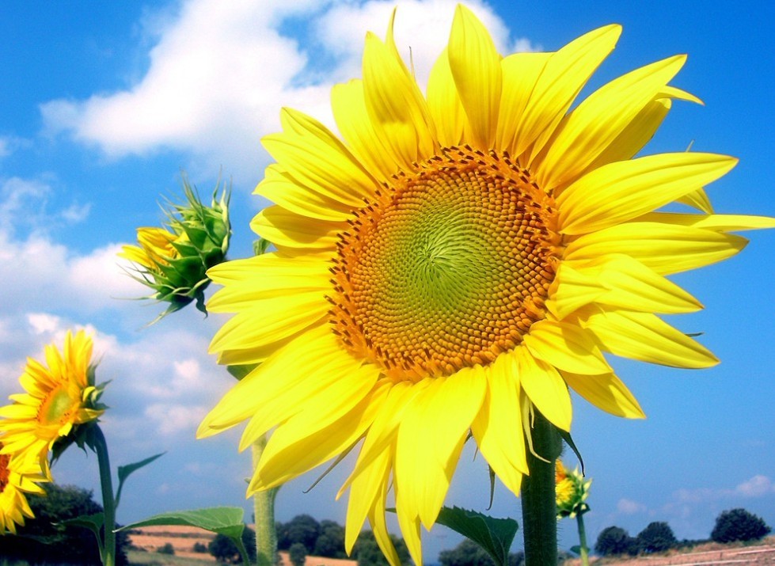

Flower World首頁 鬱金香介紹

向日葵
（學名：Helianthus annuus）是菊科向日葵屬的植物。別名太陽花或向陽花，但易與非洲菊混稱，一般應
稱向日葵。因花序隨太陽轉動而得名。
型態
一年生草本。莖直立，圓形多稜角，質硬被白色粗硬毛。廣卵形的葉片通常互生，先端銳突或漸尖，有基出3
脈，邊緣具粗鋸齒，兩面粗糙，被毛，有長柄。頭狀花序，直徑10～30公分，單生於莖頂或枝端。總苞片多層
，葉質，覆瓦狀排列，被長硬毛，夏季開花，花序邊緣生中性的黃色舌狀花，不結實。花序中部為兩性管狀花
，棕色或紫色，能結實。矩卵形瘦果，果皮木質化，灰色或黑色，稱葵花籽。
大小
最常見的向日葵高度為2.5～3.5公尺。根據1567年的科學文獻報告，歷來被認為單頭向日葵植物是種植在帕多
瓦，植株高度最高可達12公尺。同樣的種子，種植在其他時間和地點（如馬德里），植株高度可達近8公尺。更
近的紀錄（約二十年前）則有8公尺以上的植株，在荷蘭和加拿大安大略省。
象徵
向日葵原產地據信為北美洲。是俄羅斯、烏克蘭、葡萄牙、秘魯、玻利維亞的國花，日本北九州市的市花。
花語
勇敢的去追求自己想要的幸福。